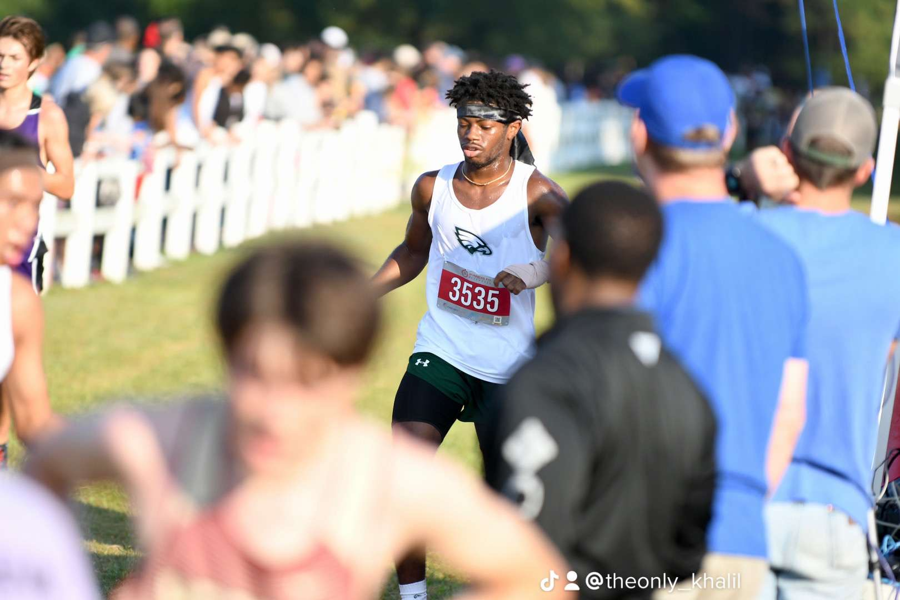
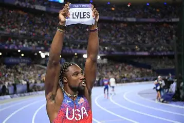
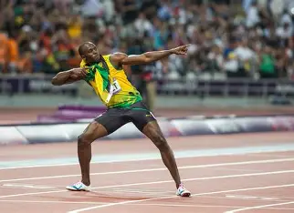

Sprinter



This guy, Noah Lyles, is the fastest 200m sprinter of our generation. With the prs(personal record) of 9.79 in the 100 and 19.31 in the 200m. He was undefeated for a stretch of races and even claimed the American Record in the 200 and holds the record for the most sub 20 200m races of all time. He is even a 4x world champion in the 200 while also winning the 100m gold medal at the biggest stage of sports entertainment, The Olympics.
Learn more aboutNoah Lyles here!

Usain Bolt is the GOAT when it comes to sprinting. Holding the world record in the 100/200 meter sprints while also holding the 4x100 and was a former 300m world record holder.
Learn more aboutUsain Bolt here!